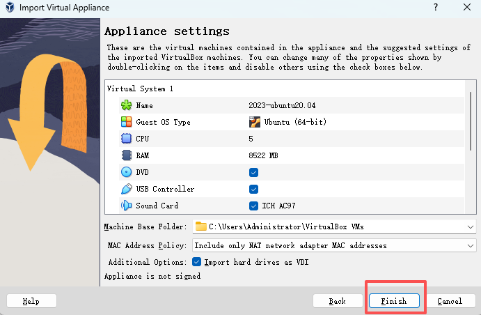
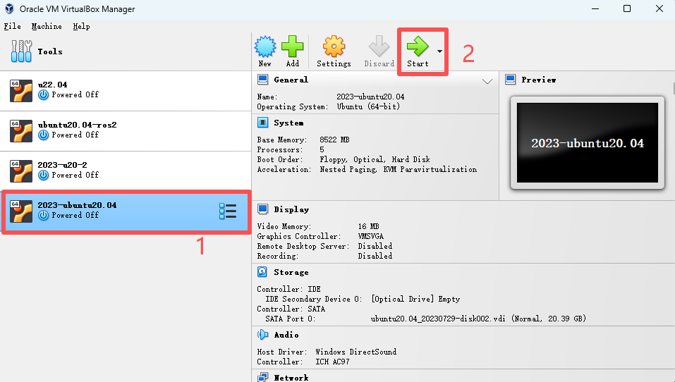
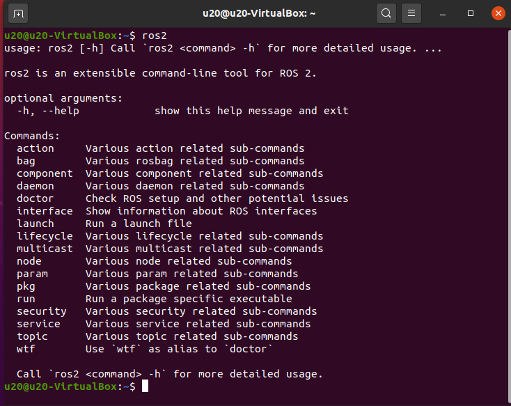
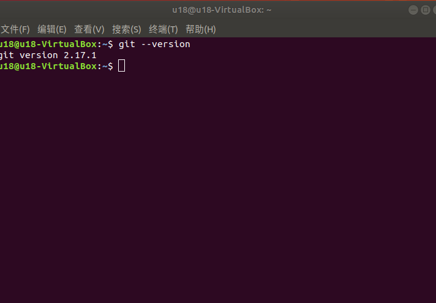

ROS2 Environment Setup
This tutorial provides two methods for setting up an Ubuntu 20.04/22.04 + ROS1 development environment:
- Method 1: Importing a Virtual Machine Image (Recommended) → Quickest to get started, with a complete built-in environment
- Method 2: Customizing the Installation Environment → Building from scratch, suitable for users who require flexible customization
Method 1: Importing a Virtual Machine Image
Applicable Use Case: Using ROS2 or MoveIt2
Note: To simplify environment setup, we will provide a Linux system image (Ubuntu 22.04), the Virtual Box installation package, and its extensions. The following instructions will show you how to install Virtual Box and import the Linux system image (the default password is 123). Built-in Environment: ROS2 humble + MoveIt2 + Git + pymycobot + mycobot_ros2
1 Virtual Machine Installation
Go to the official website to download the virtual machine Virtual Box
VirtualBox installation package: Windows hosts
VirtualBox Extension Pack: VirtualBox 7.0.10 Oracle VM VirtualBox Extension Pack
Of course, if you already have your virtual machine, you can skip this step.
We chose to download Virtual box because it is free.


2 Download Linux system image
Click to download:Linux ubuntu22.04
3 Import Linux system image
Note: For the import method, please refer to the import method of Ubuntu 20.04 system
In the Virtual Box interface, click Management -> Import Virtual Computer -> Select Virtual Image -> Select the installation path and import, and then install it as follows.



Just wait for the image to be imported. The installation is successful as shown below.

Then start the system, the default password is 123
4 Update pymycobot
To use the latest robotic arm driver library, open a terminal and execute the following command:
pip3 install pymycobot --upgrade
5 Update mycobot_ros2
To ensure users have the latest official packages, navigate to the /home/u22/catkin_ws/src folder through a file manager, open a console terminal (shortcut Ctrl+Alt+T), and enter the following command to update:
# Clone the code from GitHub
cd ~/colcon_ws/src
# Delete the original mycobot_ros2 package
sudo rm -rf mycobot_ros2
git clone --depth 1 https://github.com/elephantrobotics/mycobot_ros2.git
cd # Return to the workspace
colcon build # Build the code in the workspace
source install/setup.bash # Add environment variables
To reduce compilation time, you can compile individual packages. package_name is the specific package name; please modify it accordingly.
cd ~/colcon_ws
colcon build --packages-select package_name
source install/setup.bash
Method 2: Customizing the Installation Environment
1 Virtual Machine Installation
Note: When installing the virtual machine system, please install the Ubuntu 20.04 version of the system. The installation method is the same as Ubuntu 18.04. If you want to use the moveIt2 function, you need to install Ubuntu 22.04 version system.
To install different versions of Ubuntu systems in Linux, please refer to 6.2 ROS1 Environment Setup section.
2 ROS2 Installation
The basic development environment construction requires the installation of the robot operating system ROS2 and the git version manager. The following describes their installation methods and processes respectively.
2.1 Version selection
ROS2 has a one-to-one correspondence with Ubuntu. Different versions of Ubuntu correspond to different versions of ROS2. For reference, see the following website: http://docs.ros.org/en/foxy/Releases.html
Here are the ROS2 versions supported by Ubuntu:
| ROS2 version | Release date | Maintenance deadline | Ubuntu version |
|---|---|---|---|
| Foxy | June 5, 2020 | May 2023 | Ubuntu 20.04(Focal Fossa) |
| Galactic | May 23, 2021 | November 2022 | Ubuntu 20.04(Focal Fossa) |
| Humble | May 23, 2022 | May 2027 | Ubuntu 22.04(Jammy Jellyfish) |
Please install the corresponding ROS2 version according to the Ubuntu version you installed, moveIt2 only supports the humble version
If the versions are different, the download will fail. Here we choose Ubuntu 20.04 (recommended), and the corresponding ROS2 version is ROS2 Foxy
NOTE: Currently we do not provide any reference for installing ROS2 on Windows. If necessary, please refer to http://docs.ros.org/en/foxy/Installation/Alternatives/Windows-Development-Setup.html
2.2 Start installation
1 Add source
There is no ROS2 in the software source list of Ubuntu itself Software source, so you need to first configure the ROS2 software source to the software list warehouse before you can download ROS2. Open a console terminal (shortcut key Ctrl+Alt+T), enter the following command:
- Official source:
echo "deb [arch=$(dpkg --print-architecture) signed-by=/usr/share/keyrings/ros-archive-keyring.gpg] http://packages.ros.org/ros2/ubuntu $(source /etc/os-release && echo $UBUNTU_CODENAME) main" | sudo tee /etc/apt/sources.list.d/ros2.list > /dev/null
- If the download speed is slow, it is recommended to select a mirror source nearby to replace the above command. For example, Huawei Cloud is:
echo "deb [arch=$(dpkg --print-architecture)] https://repo.huaweicloud.com/ros2/ubuntu/ $(lsb_release -cs) main" | sudo tee /etc/apt/sources.list.d/ros2.list > /dev/null
2 Set the key
Configure the public network key, this step is to let the system confirm that our path is safe, so that there is no problem downloading the file, otherwise it will be deleted immediately after downloading:
sudo apt install curl gnupg2 -y
curl -s https://gitee.com/ohhuo/rosdistro/raw/master/ros.asc | sudo apt-key add -
3 Installation
After adding the new software source, you need to update the software source list, open a console terminal (shortcut key Ctrl+Alt+T), and enter the following command:
sudo apt-get update
Execute install ROS2, open a console terminal (shortcut key Ctrl+Alt+T), please enter the following command according to your Ubuntu version:
# Ubuntu 20.04 foxy version
sudo apt install ros-foxy-desktop
# Ubuntu 20.04 galactic version
sudo apt install ros-galactic-desktop
# Ubuntu 22.04 humble version
sudo apt install ros-humble-desktop
The installation process takes a long time, please wait patiently
After the installation is complete, refresh the environment variables:
source /opt/ros/foxy/setup.bash
2.3 Set up the ros2 environment
In order to avoid the need to re-validate the ROS2 function path every time the terminal window is closed, we can configure the path to the environment variable, so that the ROS2 function path can be automatically validated every time a new terminal is opened. Execute the following commands in the terminal in sequence, open a console terminal (shortcut key Ctrl+Alt+T) and execute the following commands:
# Ubuntu 20.04 foxy version
# Add the ros environment to the environment variables of the current console
echo "source /opt/ros/foxy/setup.bash" >> ~/.bashrc
# Ubuntu 20.04 galactic version
echo "source /opt/ros/galactic/setup.bash" >> ~/.bashrc
# Ubuntu 22.04 humble version
echo "source /opt/ros/humble/setup.bash" >> ~/.bashrc
source ~/.bashrc
2.4 Install ROS2 additional dependencies
Enter the following command in the terminal Install ROS2 additional dependencies, open a console terminal (shortcut Ctrl+Alt+T):
sudo apt install python3-argcomplete -y
sudo apt install ros-foxy-xacro
sudo apt-get install python3-colcon-common-extensions
# Ubuntu 20.04 foxy version
sudo apt install ros-foxy-joint-state-publisher-gui
# Ubuntu 20.04 galactic version
sudo apt install ros-galactic-joint-state-publisher-gui
# Ubuntu 22.04 humble version
sudo apt install ros-humble-joint-state-publisher-gui
sudo apt install ros-humble-xacro
2.5 Verify installation
To verify ROS2 To check whether the installation is successful, open a console terminal (shortcut key Ctrl+Alt+T), and execute the following command in the terminal:
ros2
When the following interface is displayed, it means that ROS2 is installed successfully

3 MoveIt2 installation
Note: Only the installation method for Ubuntu 22.04 is provided here
MoveIt2 is a functional package of a series of mobile operations in ros2, mainly including motion planning, collision detection, kinematics, 3D perception, operation control and other functions.
3.1 Update the software source list
Open a console terminal (shortcut key Ctrl+Alt+T), and enter the following command in the terminal window to update the software source list:
sudo apt update
3.2 Install MoveIt2
sudo apt-get install ros-humble-moveit
sudo apt install ros-humble-ros2-control ros-humble-ros2-controllers ros-humble-joint-trajectory-controller ros-humble-joint-state-broadcaster
4 git installation
4.1 Update the software source list
Open a console terminal (shortcut key Ctrl+Alt+T), and enter the following command in the terminal window to update the software source list:
sudo apt-get update
4.2 Installation git
Open a console terminal (shortcut key Ctrl+Alt+T), enter the following command in the terminal window, execute git installation:
sudo apt-get install git
4.3 Verify installation
Read git version, open a console terminal (shortcut key Ctrl+Alt+T), enter the following command in the terminal window:
git --version
The git version number can be displayed in the terminal, as shown below, which means the installation is successful.

5 mycobot_ros2 installation
mycobot_ros2 is a ROS2 package launched by ElephantRobotics, which is compatible with its desktop six-axis robot arm mycobot series.
Project address: http://github.com/elephantrobotics/mycobot_ros2
5.1 Prerequisites
Before installing the package, please ensure that you have a ros2 workspace.
Here we give sample commands for creating a workspace. Open a console terminal (shortcut key Ctrl+Alt+T), and enter the following command in the command line:
mkdir -p ~/colcon_ws/src # Create a folder
Add workspace environment
The official default ROS2 workspace is colcon_ws.
echo "source ~/colcon_ws/install/setup.bash" >> ~/.bashrc
source ~/.bashrc
5.2 Installation
NOTE:
- This package depends on ROS2 and MoveIT2. Make sure to install ROS2 and MoveIT2 successfully before using it.
- The interaction between this package and the real robot arm depends on PythonApi -
pymycobot - The Api project is: https://github.com/elephantrobotics/pymycobot
- Quick installation:
pip install pymycobot --upgrade
When executing the pip install pymycobot --upgrade command, if the following error message appears:

Enter the following command to install pip according to the prompt
sudo apt install python3-pip
After pip is installed, execute it again in the terminal
pip install pymycobot --upgrade
The installation method depends on Git, please make sure Git is installed on your computer.
Please download the code from different branches depending on your ROS2 version:
Ubuntu 20.04 / ROS2 Foxy - branch
foxyUbuntu 20.04 / ROS2 Galactic - branch
galacticUbuntu 22.04 / ROS2 Humble - branch
humble
The official default ROS2 workspace is colcon_ws.
cd colcon_ws/src # Enter the src folder in the workspace
# For the humble branch
git clone -b humble --depth 1 https://github.com/elephantrobotics/mycobot_ros2.git
# For the foxy branch
git clone -b foxy --depth 1 https://github.com/elephantrobotics/mycobot_ros2.git
# For the galactic branch
git clone -b galactic --depth 1 https://github.com/elephantrobotics/mycobot_ros2.git
cd .. # Return to the workspace
colcon build --symlink-install # Build the code in the workspace. --symlink-install: Avoids recompiling every time you modify the Python script.
source install/setup.bash # Add environment variables
To reduce compilation time, you can compile a certain package separately, where package_name is the name of the specific package. Please modify it according to your actual situation.
cd ~/colcon_ws
colcon build --packages-select package_name
source install/setup.bash
This completes the ROS2 environment setup. For more information on using ROS2, please refer to ROS2 Basics or ROS2 Basic Functions.